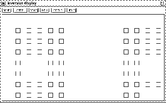
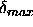
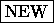
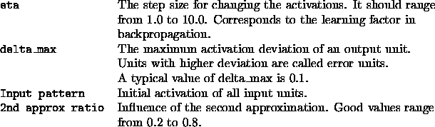

The inversion algorithm is called by clicking the button in the manager panel.
Picture  shows an example of the generated display.
shows an example of the generated display.

The display consists of two regions. The larger, lower part contains a sketch of the input and output units of the network, while the upper line holds a series of buttons. Their respective functions are:
 : Quits the inversion algorithm and closes the
display.
: Quits the inversion algorithm and closes the
display.
 : Starts / Continues the algorithm. The program
starts iterating by slowly changing the input pattern until either the
STOP button is pressed, or the generated output pattern approximates
the desired output pattern sufficiently well. Sufficiently well means
that all output units have an activation which differs from the
expected activation of that unit by at most a value of
: Starts / Continues the algorithm. The program
starts iterating by slowly changing the input pattern until either the
STOP button is pressed, or the generated output pattern approximates
the desired output pattern sufficiently well. Sufficiently well means
that all output units have an activation which differs from the
expected activation of that unit by at most a value of 
. This error limit can be set in the setup panel (see below). During the iteration run, the program prints status reports to stdout.
cycle 50 inversion error 0.499689 still 1 error unit(s)
cycle 100 inversion error 0.499682 still 1 error unit(s)
cycle 150 inversion error 0.499663 still 1 error unit(s)
cycle 200 inversion error 0.499592 still 1 error unit(s)
cycle 250 inversion error 0.499044 still 1 error unit(s)
cycle 269 inversion error 0.000000 0 error units left
where cycle is the number of the current iteration, inversion error is
the sum of the squared error of the output units for the current input
pattern, and error units are all units that have an activation that
differs more than the value of  from the target activation.
from the target activation.
 button
continues the algorithm from its last state. Alternatively the
algorithm can be reset before the restart by a click to the
button
continues the algorithm from its last state. Alternatively the
algorithm can be reset before the restart by a click to the 
button, or continued with other parameters after a change in the setup. Since there is no automatic recognition of infinite loops in the implementation, the button is also necessary when the
algorithm obviously does not converge.
button is also necessary when the
algorithm obviously does not converge.
 : Opens a pop-up window to set all variables
associated with the inversion. These variables are:
: Opens a pop-up window to set all variables
associated with the inversion. These variables are:

A short description of all these variables can be found in an associated help window, which pops up on pressing in the setup window.
The variable second approximation can be understood as follows: Since the goal is to get a desired output, the first approximation is to get the network output as close as possible to the target output. There may be several input patterns generating the same output. To reduce the number of possible input patterns, the second approximation specifies a pattern the computed input pattern should approximate as well as possible. For a setting of 1.0 for the variable Input pattern the algorithm tries to keep as many input units as possible on a high activation, while a value of 0.0 increases the number of inactive input units. The variable 2nd approx ratio defines then the importance of this input approximation.
It should be mentioned, however, that the algorithm is very unstable. One inversion run may converge, while another with only slightly changed variable settings may run indefinitely. The user therefore may have to try several combinations of variable values before a satisfying result is achieved. In general, the better the net was previously trained, the more likely is a positive inversion result.
The network is displayed in the lower part of the window according to the settings of the last opened 2D--display window. Size, color, and orientation of the units are read from that display pointer.